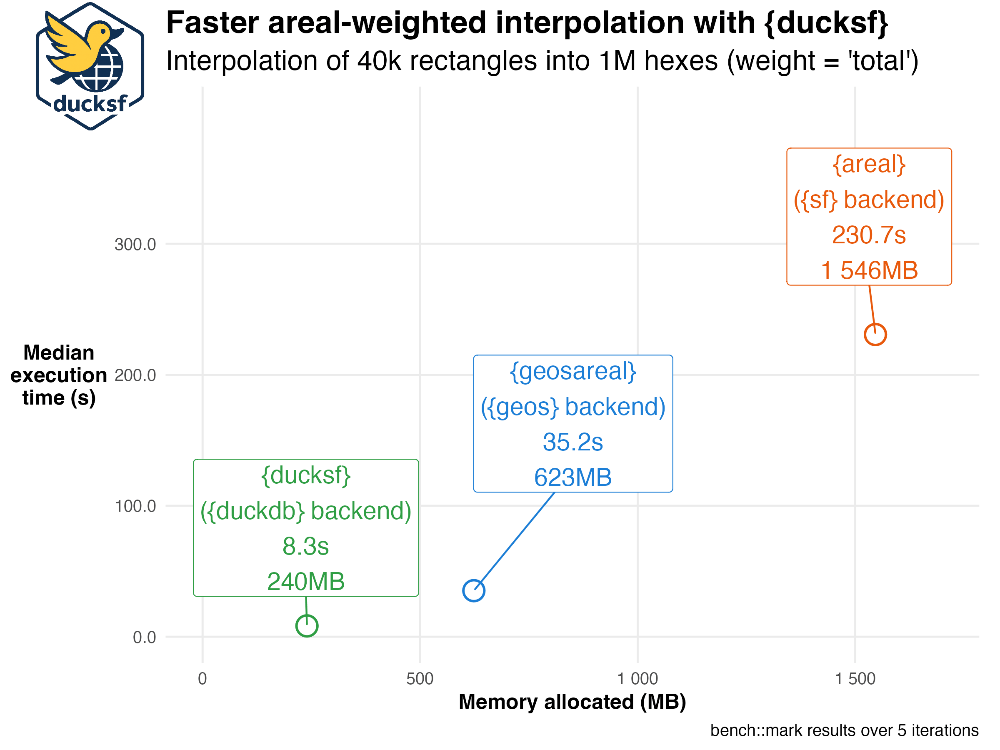
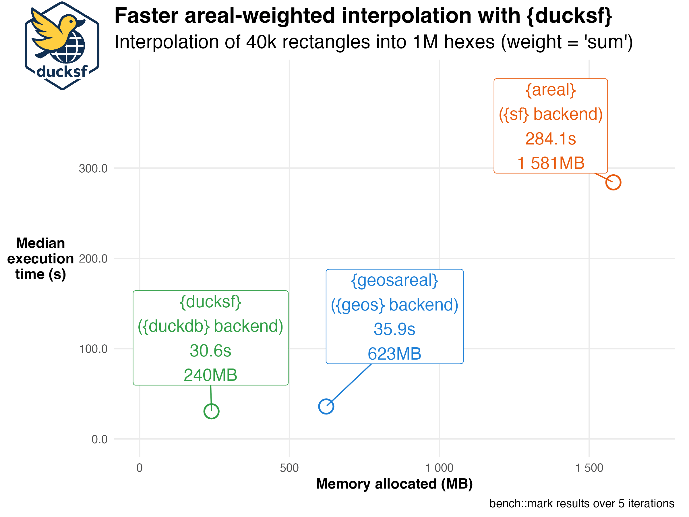
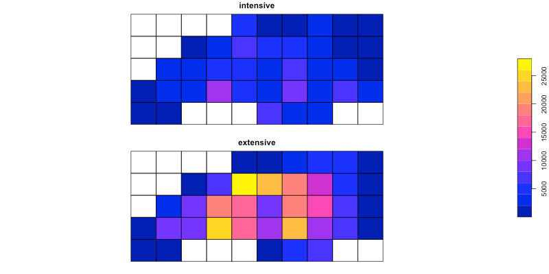

This package provides some alternatives to sf functions, which are implemented using duckdb and geoarrow. So far the only implemented function is areal interpolation working similar to the one fiund in ‘areal’ package, but much faster. I have no idea where this project will go, use at your own risk.
ducksf provides fast, DuckDB Spatial–backed spatial data operations for R,
with a current focus on areal-weighted interpolation as a drop-in alternative tosf::st_interpolate_aw() and areal::aw_interpolate().
Here’s what you can expect for speed gains and memory savings (measured on projected planar data):


As you can see from the figures, ducksf is much faster than than areal::aw_interpolate() (and sf::st_interpolate_aw(), as it works the same way, but is functionally more limited), especially for large datasets. It also uses less memory, which is crucial when working with large spatial datasets. Even though there is a cost of translating sf objects to DuckDB tables and back, the overall performance is significantly improved.
The misterious geosareal package is just a proof-of-concept package that also implements areal interpolation, but using geos instead of duckdb. It is not meant to be used in production and is not maintained, but the code is available here: https://github.com/e-kotov/r-geos-areal-weighted-interpolation-prototype.
Installation
You can install the development version of ducksf from GitHub with:
# install.packages("pak")
pak::pak("e-kotov/ducksf")Example
This is a basic example which shows you how to solve a common problem (following the sf package’s example - our result will be a little different, as we project the data to NAD83 / Conus Albers (EPSG:5070)):
## Quick example (using the default `sf` dataset)
library(sf)
library(ducksf)
# data & grid (from sf help)
nc <- st_read(system.file("shape/nc.shp", package = "sf"), quiet = TRUE)
# transform to NAD83 / Conus Albers (EPSG:5070)
nc <- nc |> st_transform(5070)
g <- st_make_grid(nc, n = c(10, 5)) # 'to' can be sfc for sf, but ducksf core needs an sf with an ID
# Prepare IDs for ducksf core
nc$src_id <- seq_len(nrow(nc))
g_sf <- st_as_sf(g)
g_sf$tid <- seq_len(nrow(g_sf))
## 1) ducksf core (dst_interpolate_aw) --------------------------------------
# (a) Treat BIR74 as spatially intensive (not mass-preserving)
a1_core <- dst_interpolate_aw(
target_sf = g_sf,
tid = "tid",
source_sf = nc,
sid = "src_id",
weight = "sum", # intensive semantics
intensive = "BIR74",
output = "sf"
)
sum(st_drop_geometry(a1_core)$BIR74, na.rm = TRUE) / sum(nc$BIR74, na.rm = TRUE)
# (b) Treat BIR74 as spatially extensive (mass-preserving)
a2_core <- dst_interpolate_aw(
target_sf = g_sf,
tid = "tid",
source_sf = nc,
sid = "src_id",
weight = "total", # extensive semantics (pycnophylactic)
extensive = "BIR74",
output = "sf"
)
sum(st_drop_geometry(a2_core)$BIR74, na.rm = TRUE) / sum(nc$BIR74, na.rm = TRUE)
# Quick plot (intensive vs extensive)
a_show <- a1_core[, "BIR74"]
names(a_show)[1] <- "intensive"
a_show$extensive <- st_drop_geometry(a2_core)$BIR74
plot(a_show[c("intensive", "extensive")], key.pos = 4)
Mask {sf} functions
ducksf also provides a way to mask sf functions so that they dispatch to ducksf instead of sf. This is useful if you want to use sf functions with ducksf semantics without changing your code too much. By default it is of course disabled, so you can use sf functions as usual even if ducksf is loaded. The resulting numbers will be insignificantly different from sf results due to rounding errors, but they will be very close.
## 2) Masked drop-in (sf semantics) -----------------------------------------
# Enable/disable masking so st_interpolate_aw() dispatches to ducksf
sf_use_ducksf(TRUE) # or: sf_use_ducksf(TRUE, allow = "st_interpolate_aw")
sf_use_ducksf(FALSE) # or: sf_use_ducksf(TRUE, allow = "st_interpolate_aw")
a1 <- st_interpolate_aw(nc["BIR74"], g, extensive = FALSE)
sum(a1$BIR74) / sum(nc$BIR74) # not close to 1 (intensive)
a2 <- st_interpolate_aw(nc["BIR74"], g, extensive = TRUE)
sum(a2$BIR74) / sum(nc$BIR74) # ≈ 1 (mass-preserving)
# Compare maps exactly like sf's example
a1$intensive <- a1$BIR74
a1$extensive <- a2$BIR74
plot(a1[c("intensive", "extensive")], key.pos = 4)
# Disable masking when done
sf_use_ducksf(FALSE)To test speed on relatively large data
This data and code were used for the tests presented at the top of this README, but with bench::mark() function
install.packages(setdiff(
c(
"duckdb",
"sf",
"areal",
"geoarrow",
"terra",
"geodata",
"giscoR",
"tidyverse",
"tictoc"
),
rownames(installed.packages())
))
library(duckdb)
library(sf)
library(areal)
library(geoarrow)
library(terra)
library(geodata)
library(giscoR)
library(areal)
library(tidyverse)
library(tictoc)
library(ducksf) # remotes::install_github("e-kotov/ducksf")
# also optional if you want to try it yourself, geosareal also does quite well compared to sf-based interpolation
# library(geosareal) # remotes::install_github("e-kotov/r-geos-areal-weighted-interpolation-prototype")
# get data
dir.create("private/data", recursive = TRUE)
pop <- geodata::population(year = 2020, res = 2.5, path = "private/data") # GPWv4 density
nuts2 <- giscoR::gisco_get_nuts(year = "2021", nuts_level = 2, epsg = "4326")
fr2 <- subset(nuts2, CNTR_CODE == "FR")
fr2_mainland <- subset(fr2, !grepl("^FRY|^FRM", NUTS_ID))
# crop pop raster to mainland France
pop_fr <- terra::crop(
pop,
st_bbox(fr2_mainland),
snap = "out"
)
# mask
pop_fr <- terra::mask(pop_fr, fr2_mainland)
# project the raster to EPSG:3035 (ETRS89 / LAEA Europe)
pop_fr <- terra::project(
pop_fr,
"EPSG:3035",
method = "bilinear"
)
# vectorize the raster
# yes, let's imagine there is no terra::extract() or exactextractr::exact_extract()
# and you are bound to the vector world
pop_fr_vec <- as.polygons(pop_fr, aggregate = FALSE) |>
st_as_sf() |>
mutate(cell_id = as.character(row_number()))
# generate a hexagonal grid over mainland France
bbox_fr <- st_bbox(st_transform(fr2_mainland, 3035))
cellsize_hex <- 2500 # 2.5 km hexagons
# also try pushing it down to 1km hexes to push the limits of your computer
hex <- st_make_grid(bbox_fr, cellsize = cellsize_hex, square = FALSE) |>
st_as_sf() |>
st_set_geometry("geometry") |>
mutate(hex_id = as.character(row_number()))
nrow(hex) # 171k, would be just over 1 million for 1km hexes
format(object.size(hex), "Mb") # ~200 mb, would be 1,200 mb for 1km hexes
aw_test <- areal::ar_validate(
source = pop_fr_vec,
target = hex,
varList = "population_density",
method = "aw",
verbose = TRUE
)
aw_test
Sys.time()
tictoc::tic()
hex_areal <- areal::aw_interpolate(
.data = hex,
tid = hex_id,
source = pop_fr_vec,
sid = cell_id,
weight = "total",
output = "tibble",
extensive = "population_density"
)
tictoc::toc()
Sys.time()
Sys.time()
tictoc::tic()
hex_ducksf <- ducksf::dst_interpolate_aw(
target_sf = hex,
tid = "hex_id",
source_sf = pop_fr_vec,
sid = "cell_id",
weight = "total",
output = "tibble",
extensive = "population_density"
)
tictoc::toc()
Sys.time()
Sys.time()
tictoc::tic()
hex_geos <- geosareal::geos_interpolate_aw(
.data = hex,
tid = hex_id,
source = pop_fr_vec,
sid = cell_id,
weight = "total",
output = "tibble",
extensive = "population_density"
)
tictoc::toc()
Sys.time()